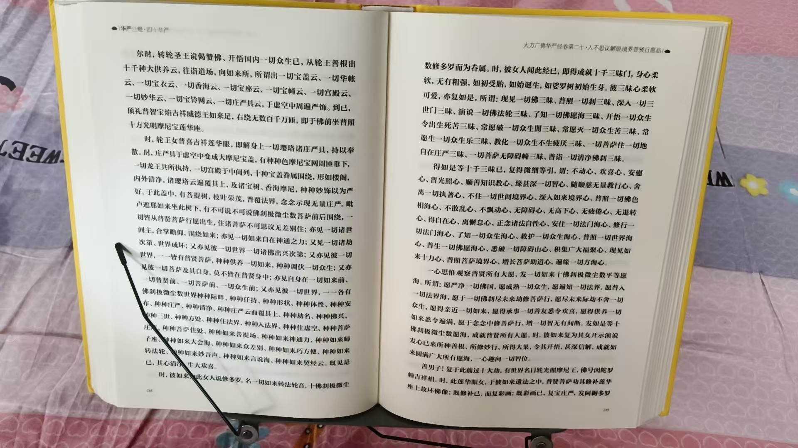

20260818光芒照耀三千大千世界 观想自己放光 先充满自己房间
修炼修行民间文化符咒术法 原始对话记录
好在四十华严只有一本
读经如蛆行
快一半了
读完这一本，就勤修
梵天问言：云何修道？
文殊师利答言：若不分别是法是非法，
离于二相，名为修道。
求一切法不可得故，是名为道。
一一《胜思惟梵天所问经》
六十华严，八十华严就一天读一页，慢慢来
我六姨前段时间不是学习了吗
现在每天在佛堂打坐，
说，坐着坐着，就看到一片光，神佛在光里走动
有时候很多
才学了一两个月，
到了这境界，就继续走进去，跟神佛每天聊天 请教
这就是他心通里面的通神佛
1通灵术，跟灵体鬼魂祖先交流，跟动物植物交流
2通人术，不用说话，跟人的意识交流，知道对方内心所想
3通神佛，得到指点，未来该干什么，甚至是下一步如何修炼
不离自身，不离自身
一心内守
九转五行，都是在内里修
越修体内越光明，就看到了，越看越清楚
叫觉眼
不是肉眼看到，但非常清晰
好多人疑惑，这个觉到，不是看到，是不是想出来的
看的比较清晰之后，就去验证
比如，闭眼看到对方腰椎发暗
并且能看到是第四腰椎
这样，问对方是不是腰疼
再验证，让他拍个片，是不是第四腰椎
这样，就验证你这个闭眼看，是真实的
就不再以为是想出来的了
多次验证，百分百准确之后，你就有了自信心
就可以去灵活使用了
先大胆尝试，再验证百分百
这次，孩子们也提出这个问题，是不是自己想出来的
觉眼，观想
观想久了，就能验证真实
所以，分清各种想
梦想，肯定不能成真
理想，可以实现
幻想，最终落空
假想，就是一种假设，方便描述
观想，久想成真
古人内观，就是观想一个小人，提着灯笼，从眉心走进去，下十二重楼，层层往下走
开始昏暗，几次进去之后，逐渐亮起来，看到肺，心，五脏
这时候看到心跟肾隔着十万八千里
每天进去看，越看越清楚
内视练成，看他人就能透视
小人提灯笼从眉心走进去，十几岁的时候，我就是这么修的
但现在找不到资料
那时候高人多，也忘了是谁教的
简单易行
自己内观，找不到下手处
必须看清楚，
时时勤拂拭
有灰就有疾病
清理干净了，五蕴皆空，度一切苦厄
疾病不再来
不就没有苦厄了
[抱拳][抱拳][抱拳]
师父有空没？麻烦观我一下看看我最近咋样了！[抱拳]
我最近挺勤奋的[抱拳]
@智善道一 [呲牙][呲牙][呲牙]
还算勤奋
不过，身体还没全亮起来
下一步，观想自己，从身体内部，能量光团，也就是光丹，放光，透出体外，使劲放
放大光明，
整个身体就亮起来了
还有的学生身体不舒服，
是因为劳作，修炼时间不够，
能量体跟肉体不重合
养不了肉体，
肉体出现问题，不舒服
起码每天打坐，观想小腹内光球
气功时代，叫意守丹田
这样，容易光体能量体，跟肉体重合
反养护卫肉体
不仅勤奋，还要用心
守不住，能量体就离开肉体
能量还在涨，
但跟肉体起不到作用
打坐的时候，重合
一不打坐，又离开了
师父，那守哪个丹田，上中下？
守下丹田，小腹充实，身体壮
可以加强意念
中丹田，意念强了，会胸闷气憋
上丹田意念强了，气上冲，头晕头痛
勿忘勿助
轻轻的
别死盯在那里
可以三个丹田来回看
三个丹田，在中脉前边
立体的光球
越看越大，越看越亮，
最后看进去，是一个世界
三家相见结婴儿
元婴出现
丹经里怎么说的
中丹田，黄婆
比喻媒婆
引领上丹田，意识，离，中女
到下丹田，坎，中男家里
这是三家相见
生成了元婴
精气神三家
也就是身心意
后天八卦图，变成先天八卦图
就说的很明白了
课程第一节，就说的这个
元婴才分身化身
师父，筑基完成到底什么表现？有人说任督二脉打通吗？
遍满三千大千世界恒河沙数
筑基完成，身体温热，百病不生
佛家里没有任督二脉
道家这个强行打通任督，逆行，很容易出问题
气功时代，出偏的达百分之六七十
多多少少
佛家里，整个身体就是舍利子
光明通透，每一条经络都是通透的
师父，我看下我现在身体怎么样。
跟@智善道一 一样
明亮但不通透
末端还不亮
就是说，练的够勤奋，心法不够
心不够大
末端，指的头，还是四肢
这个怎么理解？
主要是脚，小腿下边，表现形式，热不起来
那我站着拉手，会好一点吧！
手热，脚热，小腹热，全身温热，那就筑基成功了
是的，站着脚底容易热
心不够大，就是自己肉身使劲往外放光，
大舍之心，别不舍得放
光芒照耀三千大千世界
观想自己放光
先充满自己房间
再充满整个宅子
只练了，每次忘记放光了
整座楼，整个小区
整个市区
整个省
中国
亚洲
地球
太阳系
银河系
宇宙
无数宇宙
看自己能想到哪一步
随时随地观想放光，还是拉手练功的观想？
过去宇宙 未来宇宙，现在宇宙
随时随地
这就是资料里说的至大无垠心
都讲过，
不到那个阶段，理解不了
身体放光，第一，化掉了身体内外的因果业障灰
第二，利益大众
把身边人身上的灰化掉了，自己就不犯小人了
因果业障灰，附着在身边人身上，那人自己也不舒服，就变着法的干扰别人 就是别人的小人
好的，谢谢师父
[呲牙][呲牙]
读华严经，境界提升太大了
刚才我解答的，感觉自己回到了过去，去看的
现在还没有时间说经里的微妙细节
尽快一周读完
然后把参悟到的打印出来
每天心情愉悦
学到这么多，非常开心
微妙殊胜
放光观想：从充满房间到"至大无垠"
一、本页是什么
这页是一段关于"观想自己放光"的实录，篇幅较长。前半讲如何一步步把光芒扩大，后半转入丹田观想与"筑基"状态的讨论。核心口号是标题那句"光芒照耀三千大千世界"。
二、放光的扩程
据本页转述，做法是从一个自己罩得住的范围起步，逐级往外扩：
| 层级 | 下一步想什么 |
|---|---|
| 起步 | 先充满自己房间 |
| 家宅 | 再充满整个宅子 |
| 城市 | 整座楼、整个小区、整个市区 |
| 区域 | 整个省、中国、亚洲 |
| 星球 | 地球、太阳系、银河系 |
| 无极 | 宇宙、无数宇宙 |
页中还补了一句"过去宇宙、未来宇宙、现在宇宙"，并说"看自己能想到哪一步"。这套层层放大的说法，资料里称为"至大无垠心"，与同集群《麦田怪圈 与 心法 至小无内》一篇所讲的"至小无内"正好成对。
三、放光的两个说法用途
页中把放光的好处归为两点：
- 说法称可"化掉身体内外的因果业障灰"；
- "利益大众"——把身边人身上的"灰"化掉。
页中还说，随时随地都可以观想放光，不必等到专门打坐。
四、丹田观想：三个光球
对于"身体还没全亮起来"的人，页中建议每天打坐，观想小腹内的光球（气功时代叫"意守丹田"），并说这样做的好处是让"能量体与肉体重合"。关于守哪个丹田，页中给了注意事项：
- 下丹田：守之小腹充实；
- 中丹田：意念强了会胸闷气憋；
- 上丹田：意念强了气上冲，头晕头痛。
所以口诀是"勿忘勿助，轻轻的，别死盯在那里"，可以三个丹田来回看。说法又称：三丹田在中脉前边，是"立体的光球，越看越大越亮，最后看进去是一个世界"。
五、"筑基"的表现
页中把"筑基完成"描述为身体温热、遍满全身；并给出一个自评标准："手热、脚热、小腹热、全身温热"。它同时提出一个观点：佛家讲法中并没有"任督二脉"一说，认为道家强行打通任督、逆行，容易出问题。这些均属该页的说法，本站只作转述。
六、常见问题
问：放光要按这个顺序逐级扩吗？ 页中建议从房间起步、逐步扩大，先在自己想得到的范围内做，"看自己能想到哪一步"。
问：观想放光却越练越不舒服，怎么回事？ 页中把"脚热不起来、末端不亮"归为"心不够大"，属修行说辞。若有真实的身体不适，请及时就医，不要以观想替代诊治。
七、提醒
- 要诀：从房间起步、逐级放光，心量随之放大；
- 守丹田以"勿忘勿助、轻轻为要"，避免死盯；
- 页中"化业障""筑基"等说法属传统修习记录，不承诺功效，健康问题请就医。